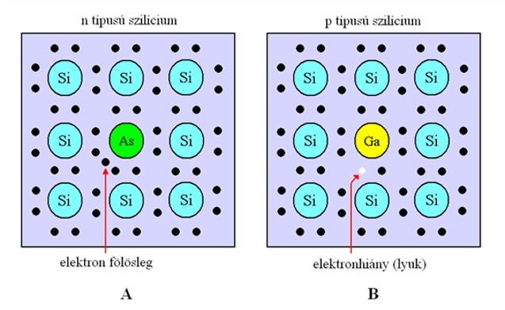

Vezetők, félvezetők, szigetelők
Azok az anyagok vezetik az áramot, amelyekben töltéshordozók vannak. Guminak, műanyagnak a villamos vezetőképessége nagyon kicsi, mert nagyon kevés töltéshordozót tartalmaznak. A fémek vezetőképessége ennél legalább 12-15 nagyságrenddel nagyobb. Ellenállásuk pedig 12-15 nagyságrenddel kisebb. A vezetők azért vezetik a villamos áramot mert szabad elektronokat tartalmaznak. Szóval szépen magyarul, paraszti ésszel... A gumi, műanyag stb. nem vezetik az áramot, ez által szigetelők. Ezért drótoknak a bevonására is használják. De viszont a réz, vas, alumínium stb. vezetik az áramot, ez által vezetők. Ezért használják drótok és egyéb vezetők készítésére.
Léteznek félvezetők is amelyek fajlagos ellenállása a vezetők és a szigetelők közé esik. Bizonyos körülmények mint melegítés illetve szennyezés hatására jó vezetővé vállnak. Leggyakrabban diódákat és tranzisztorokat készítenek belőlük. A te készüléked processzorja is sok kis tranzisztorokból áll, ez által félvezetőt tartalmaz.
